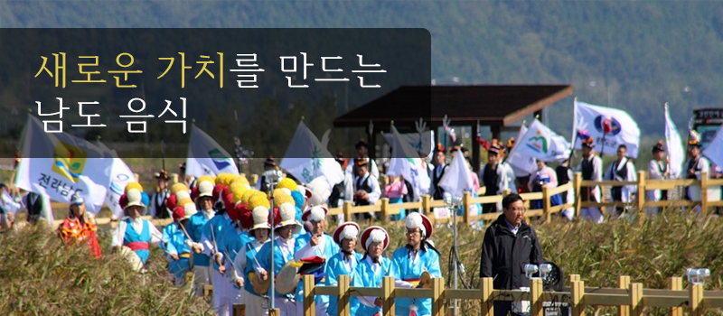
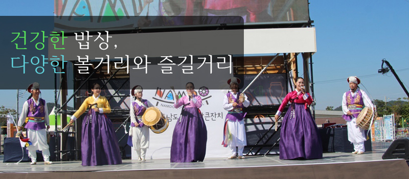
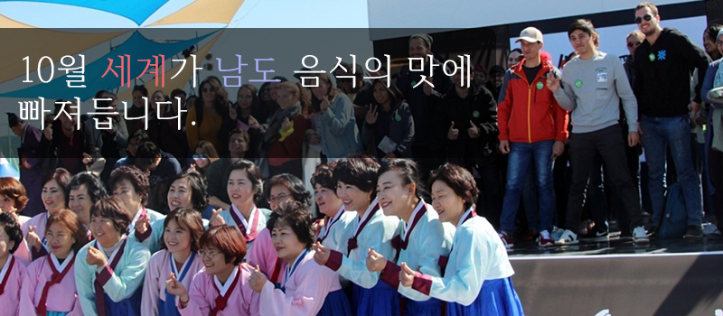
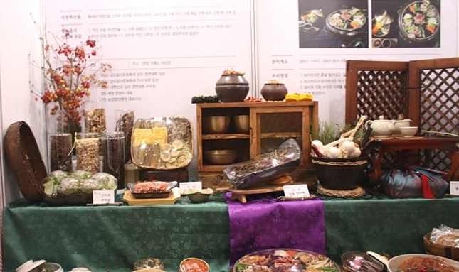
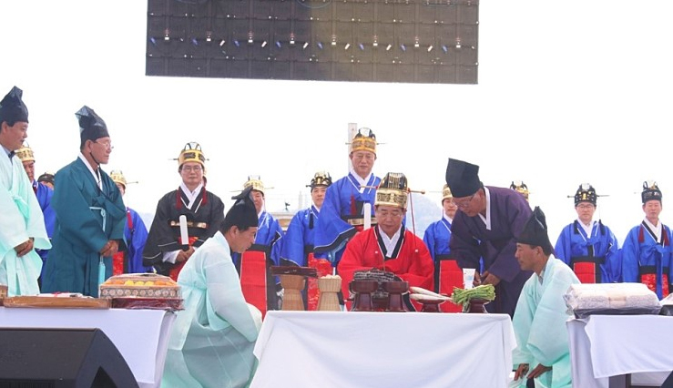
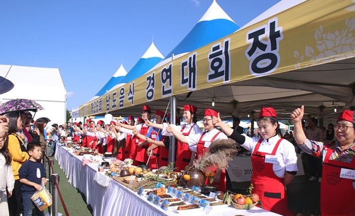

[제26회 남도음식 경연대회 공고]
1. 일시 : 2019.10.13(일) 10:00-12:30
2. 장소 : 강진만 생태공원 축제장내
3. 대상 : 전국 고등학생 및 대학생
4. 신청서 접수 : 2019.9.16(월)~9.23(월)
5. 접수 방법 : 이메일 food0337@hanmail.net
6. 문의 : 061-284-0361(한국외식업 전라남도지회)
협회소개
인사말
명인
오시는길
행사안내
요리경연대회
전시참가
참가신청
홍보마당
축제소식
보도자료
레시피
회원마당
Q&A
사진갤러리
공지사항



공지사항
제26회 남도음식 경연대회 공고
2019.09.13
남도음식문화큰잔치 셔틀버스 운행 안내
2019.09.10
남도음식문화큰잔치 리플렛
2019.09.08
남도음식문화큰잔치 홍보 포스터
2019.09.06
남도음식문화큰잔치 자원봉사자 모집
2019.09.01
갤러리



바로가기
티켓예약
축제일정
오시는길